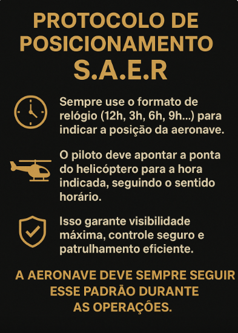
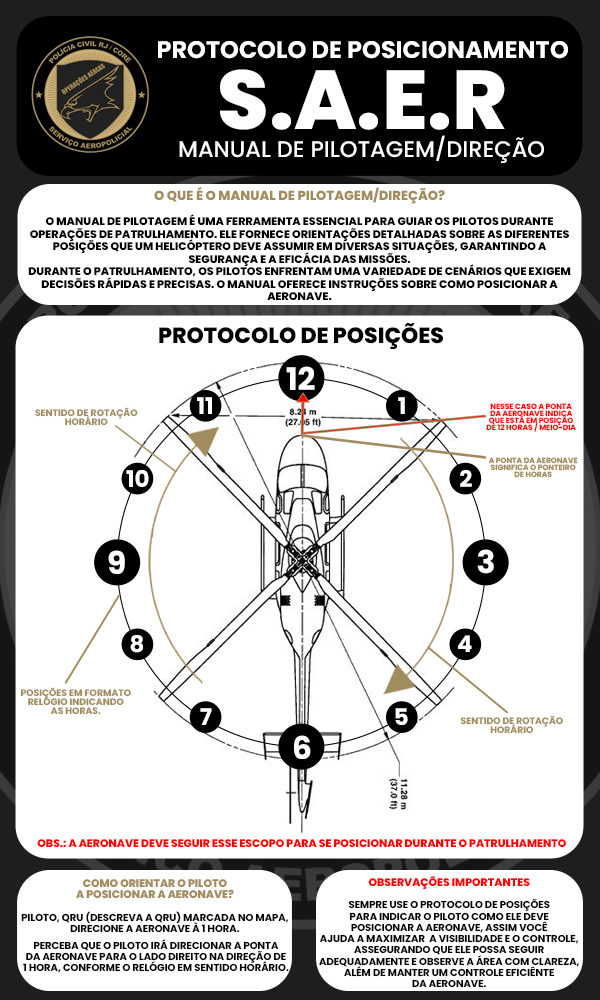

Aprenda o percurso completo de voo do SAER
📌 Assista ao tutorial completo do percurso de voo e aprenda as melhores práticas para pilotar com segurança e eficiência.
Para Pilotos de Helicóptero
A fim de garantir maior controle, precisão e segurança nas operações aéreas, estas são as melhores configurações de teclas para os pilotos utilizarem em suas aeronaves:
Manual de Pilotagem e Direção
O Manual de Pilotagem e Direção é fundamental para todos os pilotos de helicóptero em operações de patrulhamento, garantindo eficiência e precisão em cada ação realizada.
Define diretrizes claras de posicionamento da aeronave em diferentes cenários, protegendo pilotos, tripulação e demais envolvidos.
Permite manobras mais ágeis e seguras, reduzindo riscos e aumentando a eficácia das operações.
Em situações dinâmicas, o protocolo orienta o piloto a agir com rapidez e assertividade.
O uso de esquemas e ilustrações facilita o aprendizado e a correta execução durante treinamentos e operações reais.
Serve como base sólida para novos pilotos, padronizando práticas recomendadas e preparando-os para missões complexas.


O Protocolo de Posicionamento S.A.E.R é um instrumento essencial para a aviação tática, garantindo operações mais seguras, organizadas e eficazes. Segui-lo é preservar vidas e assegurar o sucesso das missões.